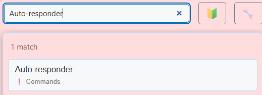
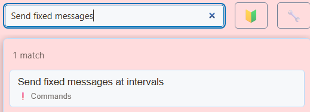
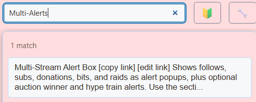

1. 連接您的聊天室
- 開啟Social Stream Ninja，開啟捕獲，並連接您的即時聊天。
- 检查查看者的消息是否显示在您的 Social Stream 聊天底座中。
- 從擴充座向目標平台發送訊息。檢查它是否出現在平台自己的聊天中。
需要連線幫助嗎？打開 設定指南.
TikTok 連接方式
聊天回复需要登录的标准连接或桌面应用程序的本地签名者回复路径。相容（WebSocket）模式不發送回應。請參閱 TikTok 連接指南.
2.新增自訂指令回复
邀請您的裝置、負載、社群連結或 Discord 使用固定回覆。不需要人工智慧機器人。
搜尋設定...Auto-responder


- 啟用指令條目。
- 輸入
!discord在 觸發命令. - 輸入您的邀請和鏈接 回覆訊息.
- 讓觀眾發送
!discord在平台聊天中。檢查同一聊天中的回覆。
使用 + 新增內容 對於每個額外的命令。

命令範例
| 指令 | 回覆範例 |
|---|---|
!device | 我在 [設備型號] 上玩。 |
!gunsmiths | 我的裝載代碼：[代碼或清單連結]。 |
!social | 我的社交連結：[您的個人資料頁面]。 |
!discord | 加入我們的 Discord：[您的邀請連結]。 |
!follow | 喜歡直播嗎？請按讚並關注或訂閱！ |
取代括號內的詳細資料。回覆限制在200個字元以內；對長列表使用連結。
別名，請輸入 !device, idevice 在同一指令條目中。
冷卻時間回覆目的地
- 設定 觸發超時（毫秒） 為
10000十秒冷卻時間。 - 將 回复全部而不是仅回复来源 在原始聊天中回覆。
- 輸入
youtube,tiktok；對應的設定項目： 僅限特定站點 如果只有那些平台應該觸發該命令。 - 啟用 僅當完整訊息完全匹配時觸發 if 指令僅在單獨發送時才有效。
3.新增自動提醒
搜尋設定...Send fixed messages


- 啟用訊息條目。
- 輸入您的提醒 广播消息.
- 設定 廣播間隔（以分鐘為單位） 為
15. - 將 起始時間偏移 設為
0沒有額外的延遲。
定時訊息會傳送至符合條件的連線聊天。僅啟用您想要的發送目的地。
啟用 如果聊天太安靜，則跳過自動訊息 在安靜時段暫停提醒。

4. 增加警報和您自己的聲音
搜尋設定...Multi-Alerts


- 選擇您的警報類別和樣式。
- 開啟 聲音與時間.啟用 播放提示音 並設定音量。
- 展開 依類型自訂聲音（覆蓋上方）.上传单独的关注、订阅和捐赠声音。
- 使用 聽 聽到每個聲音。
對於 GIF、圖像或視頻，請遵循 動畫與聲音警報.

將疊加層加入OBS
- 複製您設定的Multi-Alerts連結。
- 新增一個 瀏覽器來源 OBS 並將連結貼到其 URL 領域。
- 查看OBS中的影像和音訊。更改覆盖设置后，将更新的链接复制到 OBS 中。

YouTube 訂閱者、會員資格與捐款
免費 YouTube 訂閱者使用 追蹤 警報類別。付費會員使用 訂閱.
訂閱者警報需要以頻道擁有者登入的 API 連線。它們涵蓋公共訂閱，可能會延遲或不完整。請參閱 YouTube活動指南.
警报显示您的来源提供的事件，例如超级留言和 TikTok 礼物。外部小費服務需要其自己支援的連接。
如果出現問題
無命令回复
检查条目是否已启用、命令是否匹配、冷却时间是否已过以及帐户是否可以发送到该聊天。檢查來源限制和訊息過濾器。使用查看者帳戶進行測試。
沒有即時警報
確認事件到達 Social Stream，然後檢查疊加層的會話連結和事件/平台過濾器。預覽檢查外觀；它不連接平台。
沒有聲音
检查播放警报声音、音量和 OBS 浏览器源的音频设置。自訂音訊 URL 必須在不登入的情況下播放。在普通瀏覽器中，如果播放被阻止，請按一下疊加層。
重複的回應或聲音
检查重复的命令、另一个机器人回答相同的命令，或者两个警报源播放相同的声音。